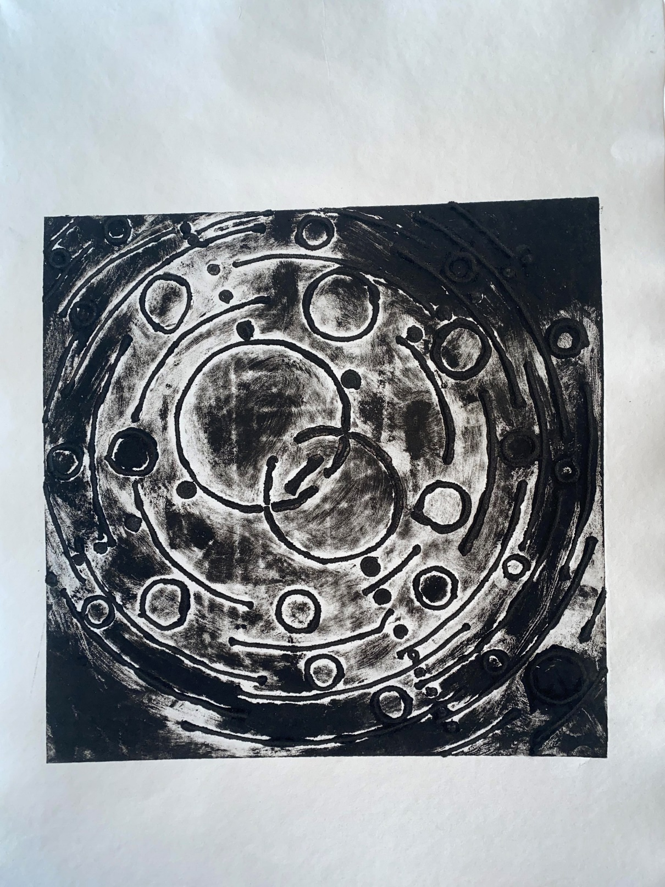
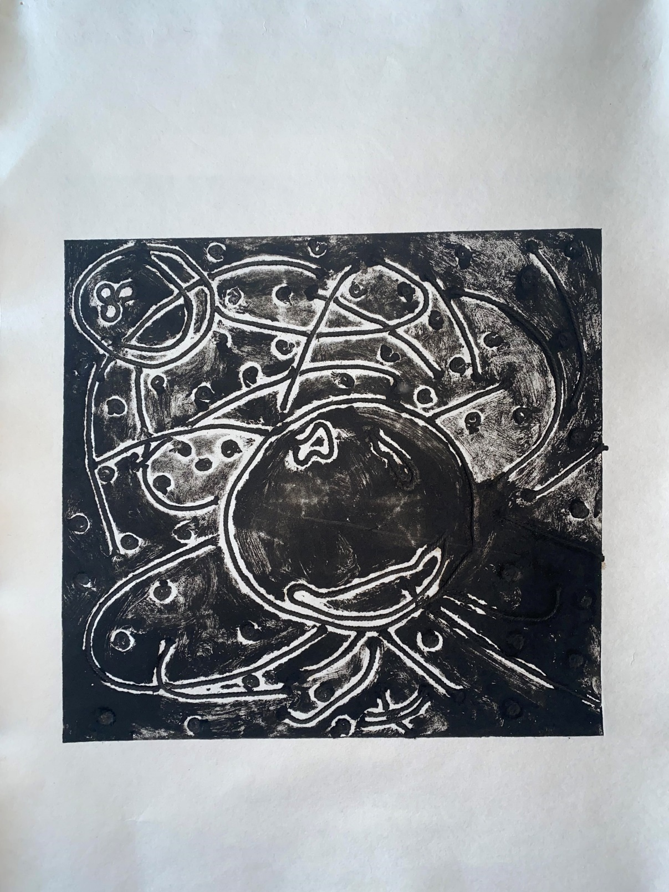
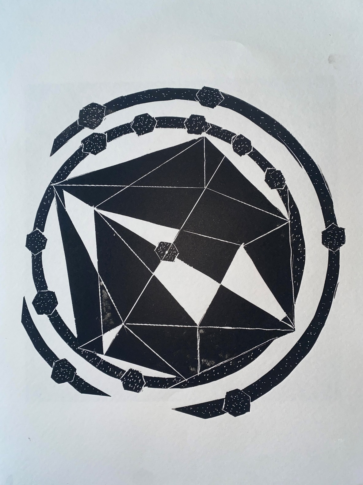
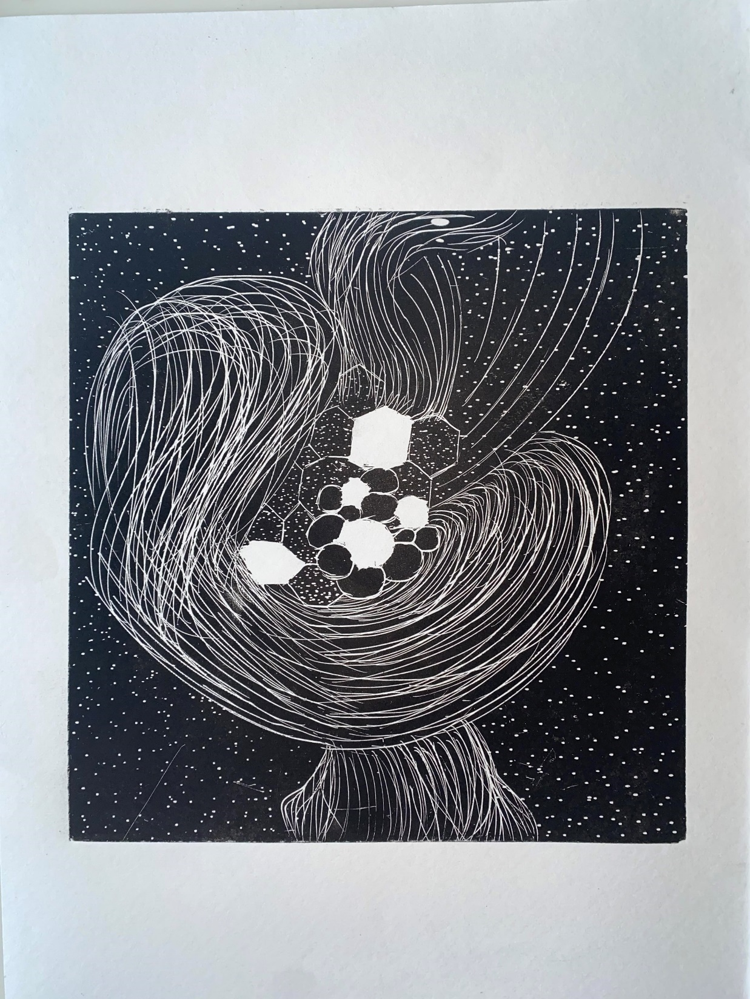

Cosmologies in Print
Four prints chasing the same question — what shape does a theory take when it leaves the page?

Collagraphy · Line Thread Work
Big Bang — Geometric Study
A geometric reading of the Big Bang — the collisions that turned nothing into everything, traced in line and thread. The piece builds the universe's first instant as a structure: clean angles, deliberate intersections, the orderly version of an event that was anything but.

Collagraphy · Line Thread Work
Big Bang — Abstract Study
The same moment, this time without scaffolding. Line and thread released into something looser — the Big Bang as feeling rather than diagram. Where the geometric study mapped the collisions, this one lets them happen.

Relief Print
String Theory — Geometric Study
String Theory rendered through an icosahedronic plane — its n surfaces standing in for the many dimensions the theory asks us to imagine. Rings carry expansion outward; hexagons mark the dark matter we cannot see. A vocabulary of shape for a vocabulary of physics.

Relief Print
String Theory — Abstract Study
String Theory as overlapping density. Embedded strings tangle with hexagons and ellipses — visible matter, given form — while a dotted background carries the dark matter we only ever know by its absence. The geometry gives way; the idea remains.